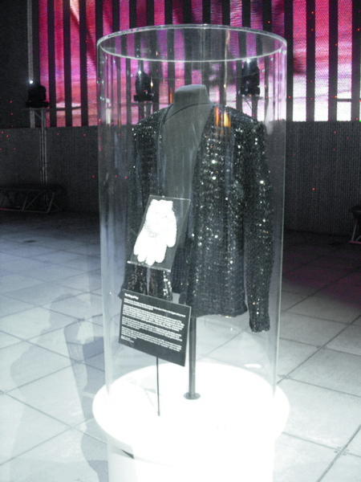

Nota de leitura
A tracklist
A tracklist
também é documento
A ordem das faixas não é arbitrária: é uma narrativa. Em Thriller, «Wanna Be Startin’ Somethin’» abre com uma acusação e «The Lady in My Life» fecha em balada; em Bad, o disco abre com uma afirmação e termina em «Leave Me Alone», resposta à imprensa.
Por isso vale a pena ler a ficha de álbum como se fosse a biografia: cada faixa responde a uma pergunta sobre o momento em que foi gravada.
